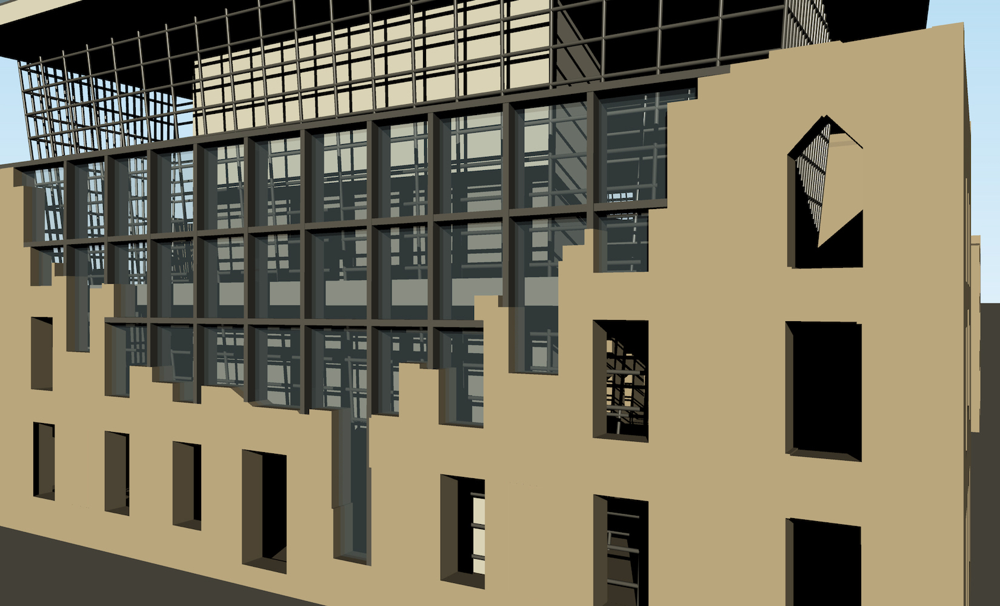
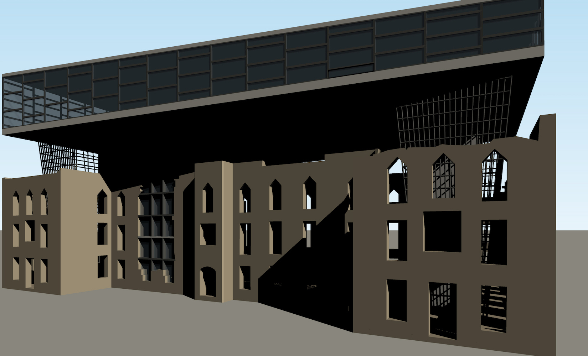
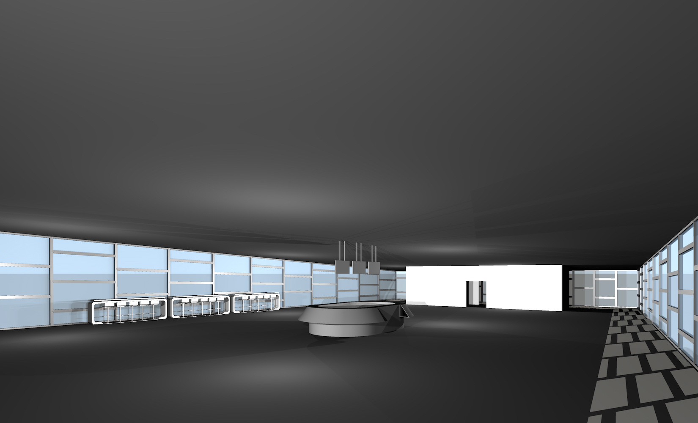

-
North
East
View
-
North
Wall
Close Up -
West
View -
Observatory
Interior
My High School partnered with a preservation firm to come up with a plan to repurpose the abandoned
Smallpox Hospital located at Roosevelt Isand, New York. The hospital opened in 1856 to treat patients
with smallpox disease. Over the past years the hospital was used for several purposes but since the
1950s it is been abandoned.
For my concept, I added an extra floor on the top which will act as an observatory and exhibit center. A
lot of people died in this hospital, so I wanted to represent life for its repurposing. The observatory
is designed in such a way that it looks like a new building is sprouting out of the old one. The
contrast from the gothic styled architecture to modern is also meant to represent a birth of a new life
from the once old building. Some sections of the walls have colapsed, so instead of reconstructing the
walls with old materials I plan to "fill" the holes in the walls with steel and glass structure to
convey the same message as above. The interior of the new floor will have a cafeteria since there is no
place to grab a snack around the southern tip of the island. The space can also be used as an event
space.